Overland flow
Where does rain go when the drains are full, and what gets in its way? Each version adds one piece, on real Auckland data around Vermont St, Ponsonby.
The idea An active map, not a blanket rule → The rule, our hypothesis, and what we found. Tested on all 1,015 fence lines here, the rule is right on 39%, wrong on 31%, misses 10% and can’t say on 20%. So test each fence line and keep the answers on a map. Team job Check fence lines by eye → What actually stands on each of the 101 fence lines in the Mt Albert tile, from the aerial photo and Street View, so we can score our detection. Random order: the first 50 are a fair sample. Lines 1 to 10 are done, so start at 11. Download the CSV when done and send it to John.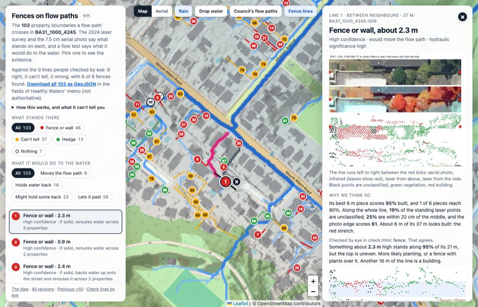
Version 11Latest
Fences on flow paths
- What changed
- v10 tidied for the problem as Council set it: the planning-rule talk is gone, the filters are what stands there and what it would do to the water, and a picked line opens in its own panel on the right with its evidence picture, the reasons, the flow test in plain words and the memo record. Closing the panel deselects the line.
- What it showed
- Same results as v10.
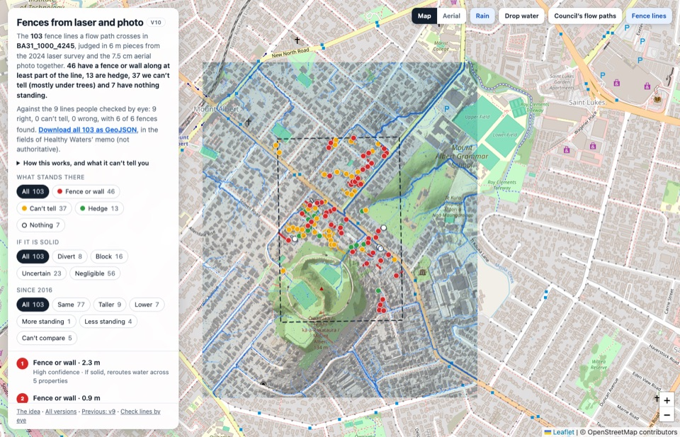
Version 10
Fences from laser and photo
- What changed
- Computer vision on the 7.5 cm aerial photo joins the laser: each line is judged in 6 m pieces on three measurements (unclassified laser points, how thin the standing thing is, and how sharp a straight edge holds in the photo). Records follow Healthy Waters’ memo, with an evidence picture for every line.
- What it showed
- All 9 lines people checked by eye come out right, including 3 fences hidden by planting that v8 missed. Against 76 AI-labelled lines, 84% of lines with a fence are found and 13% of high-confidence fence calls are wrong.
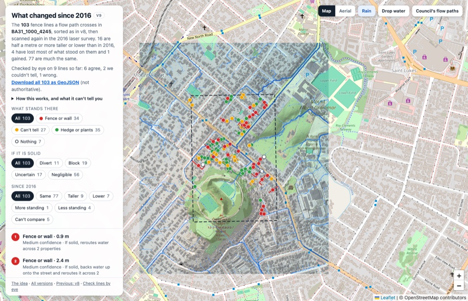
Version 9
What changed since 2016
- What changed
- The same laser scan run on the 2016 survey, the generation Council’s flow paths were drawn from, so each line says whether it is taller, lower, or has more or less standing on it. Also tried four more laser cues for fence vs hedge; none helped.
- What it showed
- 77 of 103 lines much the same. 16 are half a metre or more taller or lower (16%, against 2% on lines away from any boundary), 4 lost most of what stood on them, 1 gained.
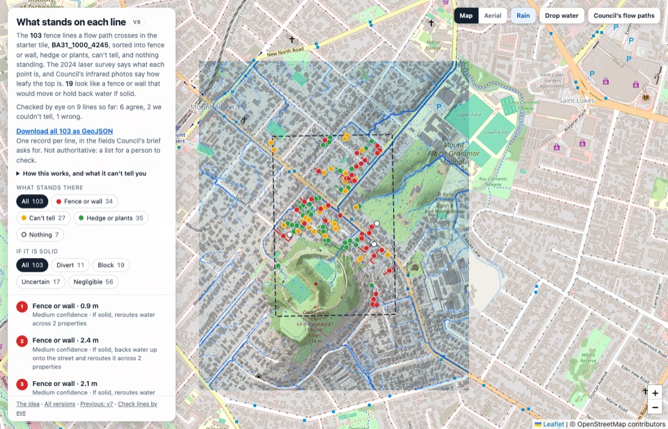
Version 8
What stands on each line
- What changed
- Each fence line sorted into fence or wall, hedge or plants, can’t tell, or nothing standing, from the laser survey’s own point classes, with Council’s infrared photos for confidence. All 103 download as GeoJSON in the fields Council’s brief asks for.
- What it showed
- 34 fence or wall, 35 hedge or plants, 27 can’t tell, 7 nothing. 19 look like a fence or wall that would move or hold back water if solid. Against the first 9 hand checks: 6 agree, 2 can’t tell, 1 wrong.
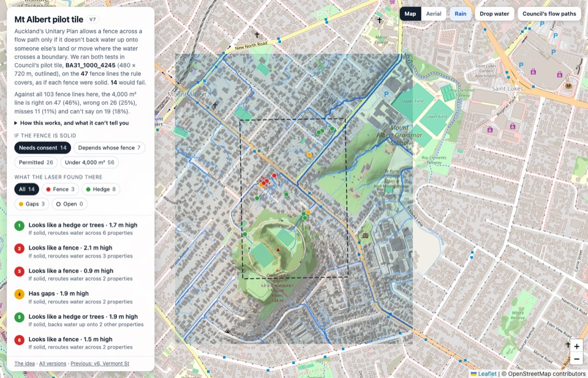
Version 7
Mt Albert pilot tile
- What changed
- The whole model moved to the hackathon’s starter tile in Mt Albert (BA31_1000_4245, 480 × 720 m) with the same tests as v6. Vermont St stays in v1 to v6.
- What it showed
- 103 fence lines in the tile. The rule covers 47, and a solid fence would fail on 14 of those, 12 of them by moving the water. Against all 103, the 4,000 m² line is right on 46%, wrong on 25%, misses 11% and can’t say on 18%, against 39/31/10/20% at Vermont St.
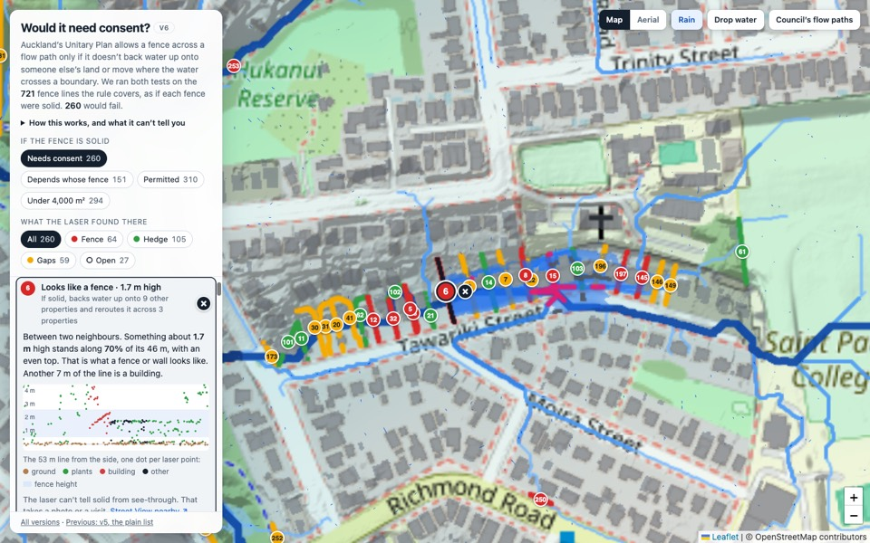
Version 6
Would it need consent
- What changed
- Each fence line is put through the two tests in the Unitary Plan’s rule for a fence in a flow path: would a solid fence back water up beyond the boundary, and would it move where the water crosses one. The list is now in Council’s own terms.
- What it showed
- The rule covers 721 of the 1,015 fence lines. A solid fence would fail on 260 of them: 173 on ponding and 141 on diverting, 54 on both. From the air, 64 of the 260 already look like a fence.
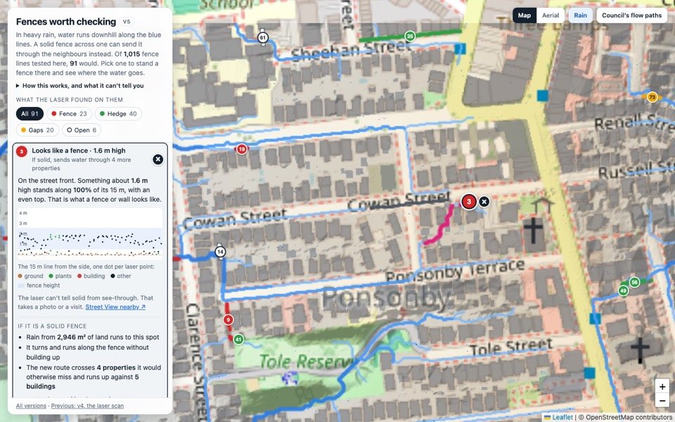
Version 5
Fences worth checking
- What changed
- The same results as versions 3 and 4, rebuilt to be read. One list of the 91 fence lines that matter, in plain words. Pick one from the list or the map to stand a fence there, and use the round X beside it to take it down.
- What it showed
- 23 look like a fence, 40 like a hedge or trees, 20 have gaps and 6 are mostly open. Each one says what a solid fence there would do and links to Street View.
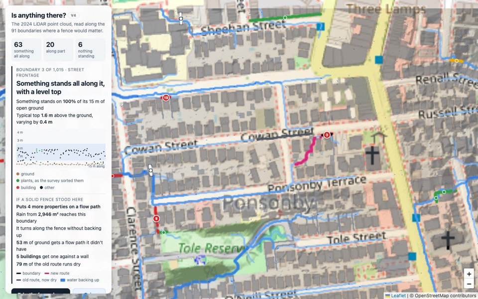
Version 4
Is anything standing there
- What changed
- The 2024 LiDAR point cloud is read along every boundary from version 3. Pick one to see a side view of the laser points on it, next to what a solid fence there would do.
- What it showed
- Something stands all along 63 of the 91 boundaries that matter, and 23 of those have a level top like a fence or wall. Only 6 have nothing. The laser can't tell solid from see-through, so that is the question left.
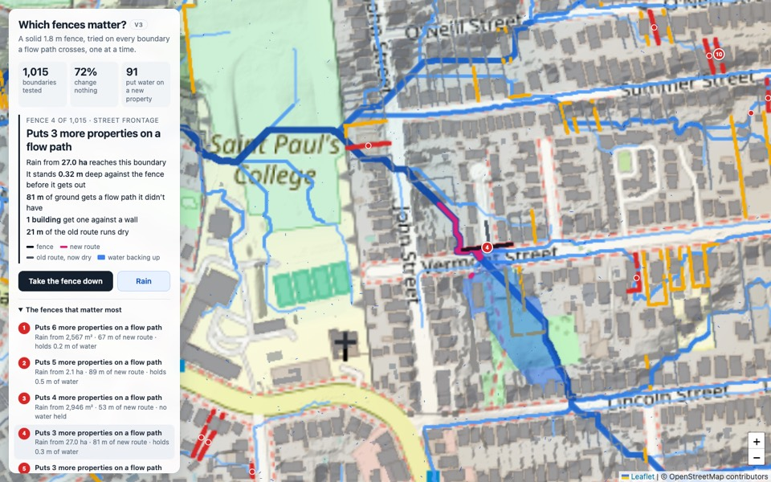
Version 3
Which fences matter
- What changed
- A solid 1.8 m fence is tried on every property boundary a flow path crosses, one at a time, and the water is run again. Click a fence to put it up and see where the water goes instead.
- What it showed
- Most fences do nothing: at 735 of 1,015 boundaries the water goes round or over. At 91 it ends up on a property that had no flow path. Those are the ones to go and look at.
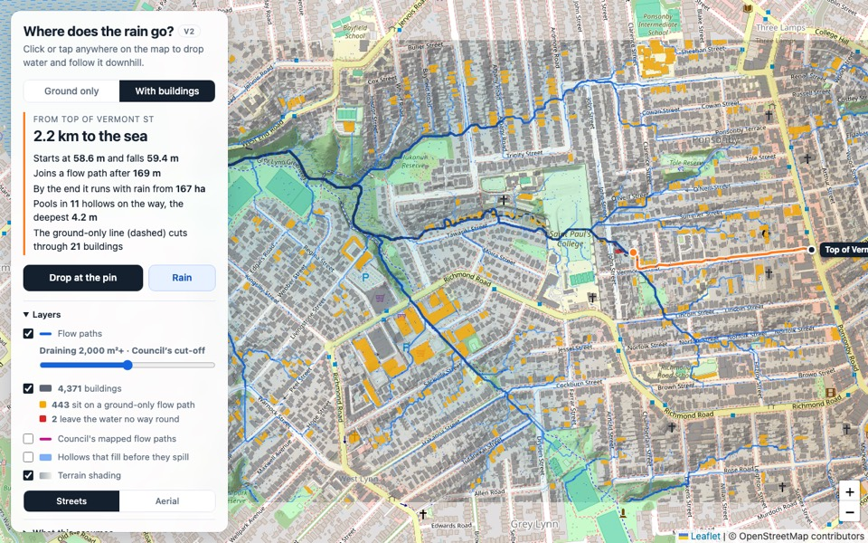
Version 2
Buildings get in the way
- What changed
- Every building is now a solid block the water has to go round. You can switch between ground only and with buildings, and a dashed line shows the route without them.
- What it showed
- 443 of the 4,371 buildings here sit on a ground-only flow path. Two leave the water no way round.
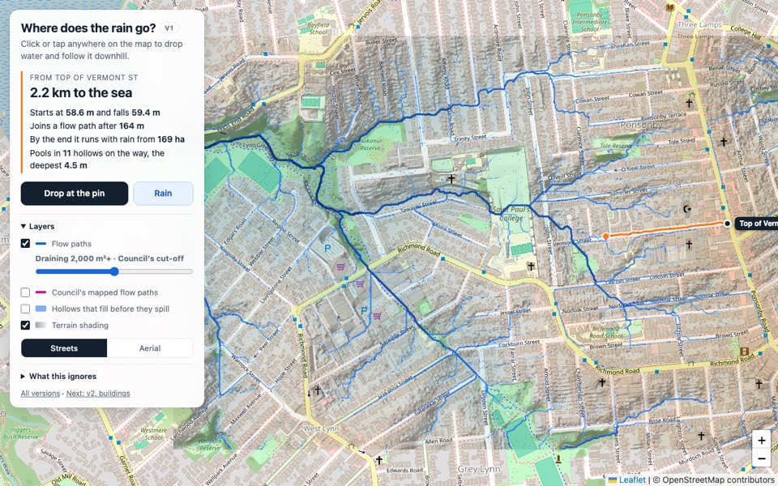
Version 1
Rain on bare ground
- What changed
- The starting point: click anywhere and a drop follows the ground downhill on the 2024 one-metre LiDAR terrain. Rain animates the whole area, and Council's mapped flow paths overlay for comparison.
- What it showed
- A simple model lands close to Council's lines. Those lines run straight through houses, because they are drawn on bare ground.